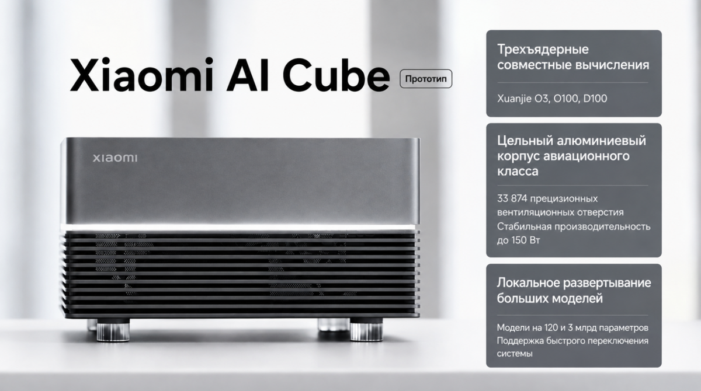

2026年8月中旬，小米半导体部门的非公开展示细节流出：一款名为Xiaomi AI Cube的工程原型机。它不是又一台用Intel/AMD移动处理器做的迷你主机，而是一台为特定任务打造的紧凑工作站：本地运行最多120B参数的开源神经网络，无需连云、也不依赖Nvidia显卡。这是目前已知关于该设备的一切。
AI Cube是一个边长约16厘米的立方体，外壳由整块航空铝在CNC机床铣削而成，而非冲压塑料。作者认为放弃塑料是为散热：金属外壳本身充当巨大的散热器。侧面和背面用激光开了超过3.3万个变径贯穿微孔。

内部装有一块加大面积的均热板（vapor chamber），盖住整个硅片堆和内存芯片。唯一的风扇是一颗动压轴承的径向涡轮。
整机峰值发热150W（最大负载）；后台助手模式或跑轻量模型时功耗降到30-40W。电源通过单根Type-C（Power Delivery协议）从外置200W GaN适配器供电。
整机逻辑不建立在单一芯片上，而是异构XRing芯片组（chiplets）组装。三颗处理器焊在同一块硅基板上，通过高速芯片间互连相连。
XRing O3：系统控制器：ARM v9.2通用逻辑芯片，内置10个计算核心（2超大核+4性能核+4能效核）、自研G2-Ultra NX 16核集显、以及200 TOPS（INT8/FP8）的基础NPU。操作系统、驱动、存储和网络栈都跑在O3上。
XRing O100：矩阵加速器：专为矩阵运算和transformer层快速解码（token生成阶段）而生的6nm专用芯片，3D布局。带1.22TB/s条带宽的专用高速缓冲：正是这一单元消除了Time-to-First-Token延迟。
XRing D100：计算器 + 内存银行：3nm芯片，20个高密度内核，最初为小米电动车自动驾驶设计。集成四通道统一内存控制器，支持最多160GB的LPDDR5X/LPDDR6阵列，CPU和NPU可直接访问。
AI Cube既能当带显示器的独立工作站，也能当局域网里的无头服务器（headless）。后面板接口：
两个USB4/Thunderbolt（40 Gbit/s，支持DisplayPort 2.1视频输出）；两个10 Gbit/s以太网口（快速搬运数据集、可把多个立方体组集群）；一个HDMI 2.1（4K/120Hz）；无线Wi-Fi 7 + 蓝牙5.4。
据8月18日闭门演示数据，工程师在原型上跑了3B到120B参数范围的模型。生成速度实测如下：
3B-14B模型（Llama 3.2、Qwen 2.5），Q8或FP16量化，只用O3+O100组合。生成速度超过85-100 token/s，功耗约35W。
70B模型（Llama 3.3 70B、DeepSeek V3 Lite），Q4_K_M 4-bit量化后约42GB，动用D100芯片内存阵列。靠着加速器1.22TB/s带宽，生成速度维持在25-28 token/s：比人舒适阅读速度（5-8 token/s）还快。
110B-120B模型及稀疏专家（MoE）架构，连同32k-64k token的工作上下文，整个塞进D100的160GB内存池。生成速度10-14 token/s，最大功耗150W。
设备跑定制版Linux发行版 + HyperOS AI Server层。为兼容全球软件，小米工程师开发了XRing Core运行时，把CUDA算子实时转译成O100和D100硬件单元的指令。开箱即支持vLLM、llama.cpp、Ollama的fork及PyTorch框架。
访问机器有三种方式：Web界面、本地OpenAI兼容API端点、或直接SSH终端连接。
目前Xiaomi AI Cube是可运行的工程样品（Engineering Sample）。公司尚未公布零售价和上架时间。据中国行业分析师估算，在当前环境下装配一台带160GB高速内存 + 3nm D100芯片的机器，成本约1200-1500美元。
如果量产版能压到2000美元以内上市，桌面AI工作站市场将迎来Mac Studio的直接竞争者：一台能用普通灯泡功耗跑动服务器级权重的机器。
作者表示：期待发布，非常好奇最终价格是多少。
参考：https://habr.com/ru/articles/1073828/